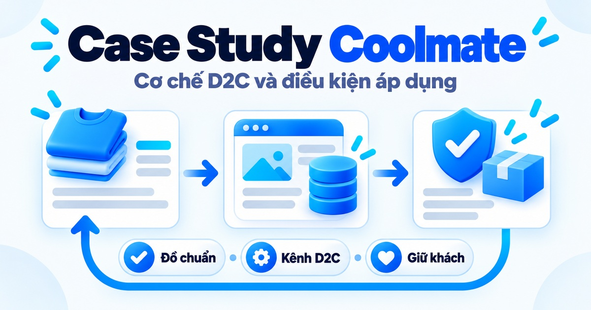
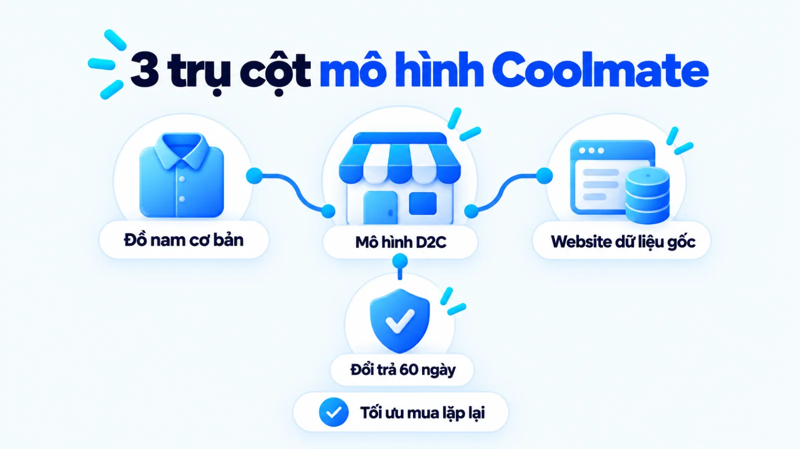
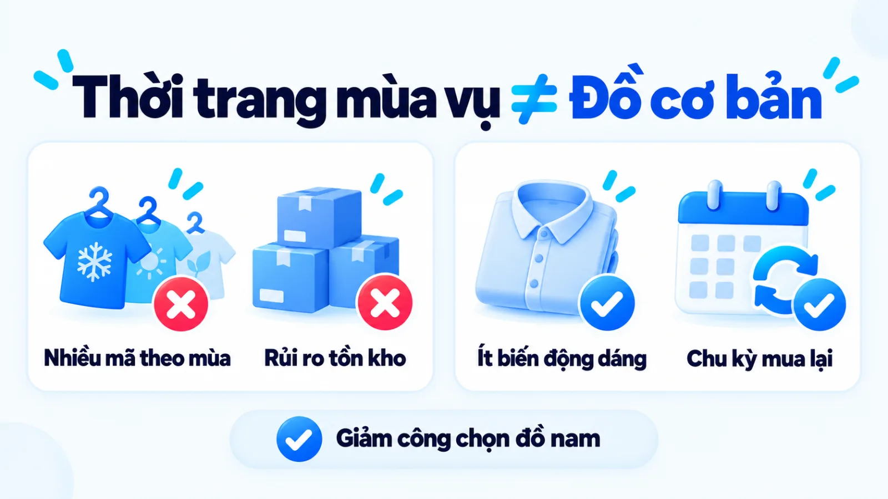
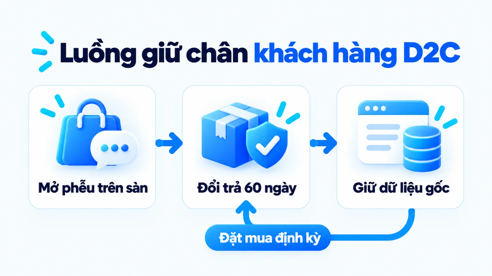
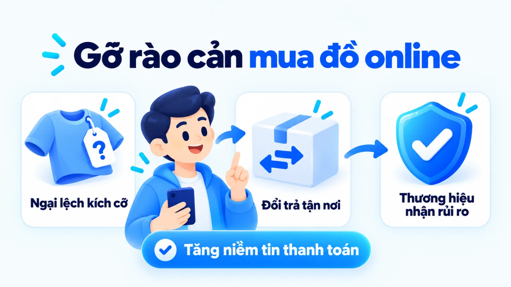
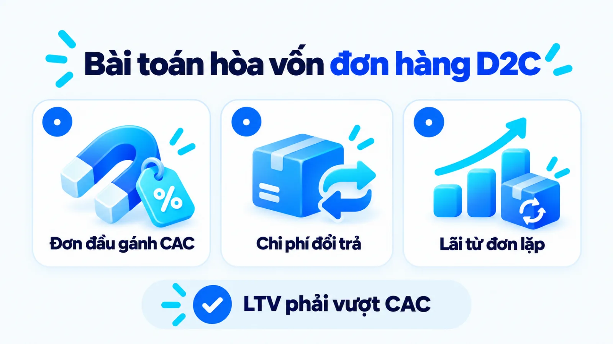
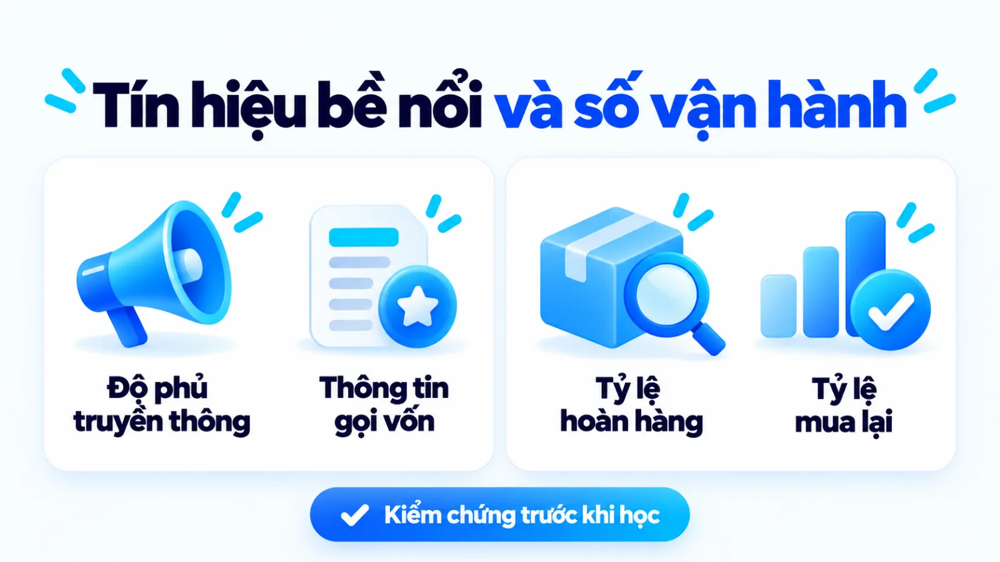
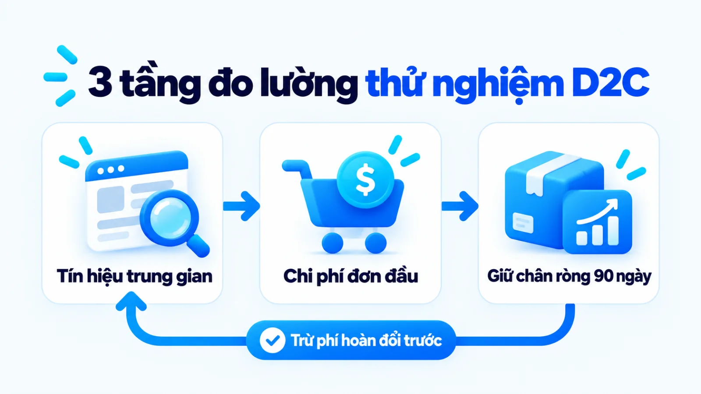

Chiến lược marketing của Coolmate và bài học D2C
Chiến lược marketing của Coolmate là trường hợp thương hiệu thời trang nam đi sau dùng mô hình bán hàng trực tiếp tới người tiêu dùng, chuẩn hóa danh mục đồ cơ bản và cam kết đổi trả 60 ngày để tối ưu mua lặp lại. Khi nhìn vào độ phủ truyền thông hay các vòng gọi vốn của hãng, người làm nghề rất dễ dừng ở bề nổi quảng cáo mà bỏ qua sự đánh đổi giữa chi phí kéo khách mới về website riêng với chi phí hậu mãi hai chiều. Nếu doanh nghiệp nhỏ sao chép chính sách đổi trả dài ngày khi biên lợi nhuận mỏng hoặc sản phẩm thiếu chu kỳ tái mua tự nhiên, mô hình này sẽ sớm bào mòn dòng tiền. Tôi là Lê Tuấn Việt, Marketing Leader tại TAKI Group. Trong bài viết này, tôi phân tích dữ kiện đã xác nhận về Coolmate, cơ chế giữ chân qua dữ liệu gốc và điều kiện cần kiểm tra trước khi áp dụng thực tế.
- Đăng ngày
- Cập nhật

Tóm tắt nhanh
- Chiến lược marketing của Coolmate xoay trục cạnh tranh từ số lượng mẫu mã thời trang mùa vụ sang chuẩn hóa tủ đồ nam cơ bản có chu kỳ thay mới tự nhiên để tối ưu tần suất mua lặp lại.
- Website riêng đóng vai trò thu thập dữ liệu khách hàng gốc và vận hành gói mua định kỳ, trong khi sàn thương mại điện tử cùng mạng lưới người đánh giá giúp mở rộng phễu nhận biết ban đầu.
- Chính sách đổi trả 60 ngày tận nơi giúp gỡ rào cản ngại lệch kích cỡ khi mua quần áo trực tuyến, nhưng đòi hỏi biên lợi nhuận gộp đủ dày và quy trình kiểm soát chất lượng lô hàng ổn định.
- Doanh nghiệp vừa và nhỏ chỉ nên chuyển dịch trọng tâm sang website D2C riêng sau khi đã kiểm chứng tỷ lệ khách mua lại tự nhiên và tính đủ chi phí vận chuyển thu hồi hai chiều.
Mục lục bài viết8 phần
Chiến lược marketing của Coolmate là gì?
Chiến lược marketing của Coolmate là hệ thống quyết định kết hợp mô hình D2C (Direct-to-Consumer, bán hàng trực tiếp tới người tiêu dùng) qua website riêng với sàn thương mại điện tử, chuẩn hóa danh mục đồ nam cơ bản và cam kết đổi trả 60 ngày để tối ưu tần suất mua lặp lại.
Hồ sơ dữ kiện công khai tại thị trường Việt Nam, cập nhật năm 2024
Tóm tắt mô hình vận hành và các cột mốc đã xác nhận của Coolmate
Theo hồ sơ giới thiệu chính thức của Coolmate cập nhật năm 2024, thương hiệu ra mắt vào tháng 3/2019 với điểm xuất phát là một nhà kho rộng 20m2, định vị cung cấp giải pháp tủ đồ cơ bản cho nam giới qua thương mại điện tử kèm câu lạc bộ hội viên CoolClub và gói mua định kỳ CoolSub. Đến tháng 10/2024, báo VnExpress ghi nhận doanh nghiệp huy động thành công 6 triệu USD tại vòng gọi vốn Series B do quỹ Vertex Ventures SEA & India dẫn dắt cùng sự tham gia của Kairous Capital.

Hồ sơ mô hình D2C và định vị đồ nam cơ bản
Điểm đáng chú ý trong cách tiếp cận thị trường của Coolmate không nằm ở một chiến dịch quảng cáo đơn lẻ, mà ở cấu trúc phối hợp giữa sản phẩm, kênh phân phối và dịch vụ sau bán. Khi phần lớn cửa hàng thời trang trực tuyến tập trung nhập mẫu mã mới liên tục theo mùa để bắt xu hướng ngắn hạn, thương hiệu này chọn đi sâu vào nhóm trang phục mặc hàng ngày của nam giới.
Cặp đối lập nền tảng ở đây là kinh doanh thời trang nhanh theo mùa vụ và kinh doanh đồ cơ bản (essentials, nhóm trang phục thiết yếu ít biến động kiểu dáng). Thời trang mùa vụ tạo ra nhu cầu mua sắm cảm xúc nhưng đi kèm rủi ro tồn kho lỗi mốt cao, trong khi đồ cơ bản có biên độ thay đổi kiểu dáng hẹp nhưng sở hữu chu kỳ thay mới tự nhiên khi sản phẩm hao mòn theo thời gian sử dụng.
Phạm vi dữ kiện đã xác nhận và điểm cần tách bạch
Trước khi mổ xẻ sâu từng đòn bẩy, người làm nghề cần tách bạch rõ những dữ kiện đã được xác nhận trên nguồn gốc với các con số truyền thông thứ cấp. Các thông tin về thời điểm ra mắt tháng 3/2019, quy mô kho ban đầu 20m2, quy định đổi trả 60 ngày và khoản đầu tư 6 triệu USD vòng Series B tháng 10/2024 là dữ kiện công khai từ doanh nghiệp và báo chí chính thống.
Ngược lại, các số liệu về cơ cấu doanh thu chi tiết giữa website riêng với từng sàn thương mại điện tử, tỷ lệ khách hàng quay lại tuyệt đối hay biên lợi nhuận ròng sau khi trừ chi phí hoàn hàng chưa có báo cáo kiểm toán độc lập công bố công khai. Những con số doanh thu theo từng thời điểm xuất hiện trên truyền thông là số do doanh nghiệp tự chia sẻ, nên chỉ dùng để tham khảo quy mô thay vì làm định mức chuẩn cho mọi SME (Small and Medium Enterprise, doanh nghiệp vừa và nhỏ).
Cách Coolmate định nghĩa lại tiêu chí mua đồ nam
Thay vì cạnh tranh bằng số lượng mẫu mã thời trang thay đổi theo tuần, Coolmate dịch chuyển tiêu chí chọn trang phục của nam giới sang sự tiện lợi, thông số chất liệu vải rõ ràng và khả năng mua lặp lại theo gói. Ba trụ cột sản phẩm tạo nên sự dịch chuyển hành vi này được tóm tắt ngay dưới đây.
- Chuẩn hóa tủ đồ cơ bản: Tập trung vào áo thun trơn, đồ lót, tất vớ và quần mặc hàng ngày để giảm thời gian đắn đo phối đồ của người mua nam.
- Minh bạch thông số chất liệu: Nhấn mạnh vào thành phần sợi vải, khả năng thấm hút, co giãn và độ bền sau nhiều lần giặt thay vì chỉ mô tả kiểu dáng bên ngoài.
- Đóng gói theo tủ đồ và định kỳ: Triển khai mô hình hộp đồ phối sẵn cùng dịch vụ đăng ký mua định kỳ CoolSub để tự động hóa việc thay mới đồ tiêu hao.

Từ chạy theo mẫu mã sang chuẩn hóa tủ đồ cơ bản
Cơ chế hành vi phía sau lựa chọn này xuất phát từ sự khác biệt trong điểm chạm mua sắm của phân khúc nam giới công sở bận rộn. Khác với nhóm người mua thích dạo qua nhiều gian hàng để săn xu hướng mới, nhiều khách hàng nam coi việc mua tất vớ, đồ lót hay áo mặc lót là một tác vụ cần giải quyết nhanh, gọn và ít phải suy nghĩ lại.
Khi một thương hiệu giữ ổn định bảng kích cỡ và phom dáng cơ bản qua các năm, người mua chỉ cần tốn công xác nhận vừa vặn ở đơn hàng đầu tiên. Từ lần mua tiếp theo, chi phí tìm kiếm thông tin gần như bằng không, giúp hành vi đặt lại đơn hàng cũ diễn ra thuận lợi hơn nhiều so với việc phải chọn lại từ đầu một mẫu thiết kế hoàn toàn mới.
Cách xoay trục tiêu chí đánh giá từ kiểu dáng sang tính tiện dụng này có nét tương đồng về mặt tư duy hệ thống với chiến lược marketing của Apple ở chỗ thương hiệu chủ động giảm bớt sự phức tạp trong lựa chọn của người dùng, dù hai ngành hàng và phân khúc giá hoàn toàn khác biệt.
Tích hợp công nghệ chất liệu và gói mua định kỳ
Tuy nhiên, định vị đồ cơ bản có một điểm yếu tự nhiên là rào cản sao chép về mặt thị giác rất thấp: một chiếc áo thun trơn nhìn qua ảnh chụp màn hình rất khó phân biệt giữa các nhãn hiệu khác nhau. Để tránh rơi vào cuộc đua giảm giá thuần túy trên sàn thương mại điện tử, Coolmate phải đưa các thông số về cấu trúc sợi vải, xử lý kháng khuẩn hay khả năng thoát nhiệt lên làm lý do thuyết phục người mua.
Song song với việc làm rõ công năng chất liệu, hãng giới thiệu dịch vụ CoolSub dựa trên mô hình Subscription (đăng ký mua định kỳ theo chu kỳ cố định) kết hợp chương trình hội viên CoolClub theo thông tin trên trang câu chuyện thương hiệu năm 2024. Ví dụ biên tập, không phải kết quả khách hàng thật: một nhân viên văn phòng khi tìm được loại tất và áo lót vừa ý trên website có thể chọn nhận định kỳ sau vài tháng mà không cần chờ các đợt săn mã giảm giá nửa đêm.
Giới hạn cần nhìn thẳng là mô hình chuẩn hóa đồ cơ bản và mua định kỳ chỉ vận hành trơn tru khi chất lượng gia công giữa các lô hàng đạt độ đồng nhất cao. Nếu khách hàng nhận lô áo đợt sau bị co rút hoặc lệch phom so với đợt đầu, toàn bộ lợi thế mua lại tự động sẽ bị đứt gãy ngay lập tức.
Ba cơ chế vận hành giữ chân khách của Coolmate
Ba cơ chế vận hành giữ chân khách hàng của Coolmate gồm hệ thống website riêng thu thập dữ liệu gốc, chính sách đổi trả 60 ngày tận nơi xóa rào cản thử đồ và mạng lưới người tiêu dùng thực nghiệm. Luồng phối hợp ba bước từ mở phễu đến giữ chân vận hành theo trình tự dưới đây.
- 01Mở phễu đa điểm chạmDùng sàn thương mại điện tử và nội dung đánh giá thực nghiệm để tiếp cận người mua mới với chi phí rào cản thấp.
- 02Gỡ rào cản đơn hàng đầuÁp dụng chính sách đổi trả 60 ngày tận nơi để xóa tâm lý sợ mua nhầm kích cỡ hoặc chất vải không như ảnh.
- 03Chuyển về dữ liệu sở hữuTích lũy dữ liệu khách hàng gốc trên website riêng và kích hoạt quyền lợi hội viên CoolClub cho các lần mua sau.

Cơ chế 1: Website riêng nắm dữ liệu khách hàng gốc
Cặp đối lập chiến lược đầu tiên trong khâu phân phối là phụ thuộc hoàn toàn vào lưu lượng sàn thương mại điện tử và chủ động xây dựng tài sản First-party data (dữ liệu khách hàng gốc do doanh nghiệp trực tiếp thu thập với sự đồng thuận của người dùng) trên website riêng. Khi bán hàng thuần túy trên sàn, doanh nghiệp tiếp cận được lượng người mua khổng lồ nhưng nền tảng nắm giữ phần lớn thông tin định danh và lịch sử hành vi chi tiết.
Theo tài liệu phân tích trên Think with Google dựa trên nghiên cứu hợp tác giữa Google và Boston Consulting Group (BCG), việc xây dựng và khai thác dữ liệu khách hàng gốc trên kênh sở hữu giúp doanh nghiệp cá nhân hóa trải nghiệm và duy trì hiệu quả kinh doanh dài hạn. Khi khách hàng đăng nhập vào website riêng và tham gia chương trình CoolClub, thương hiệu biết rõ họ thường mặc cỡ nào, mua dòng sản phẩm gì và bao lâu chưa quay lại.
Từ nền dữ liệu đó, đội ngũ có thể thiết lập các kịch bản cá nhân hóa bằng AI hoặc gợi ý đúng tổ hợp sản phẩm bổ trợ mà không phải trả phí đấu thầu từ khóa lại từ đầu cho chính khách hàng cũ của mình. Để hiểu bức tranh phối hợp rộng hơn giữa kênh sở hữu và kênh trả phí, bạn có thể xem thêm bài viết về chiến lược digital marketing cho doanh nghiệp vừa và nhỏ.
Cơ chế 2: Đổi trả 60 ngày xóa rào cản mua online
Trở ngại lớn nhất khiến người tiêu dùng chần chừ trước nút thanh toán trên một website thời trang lạ là rủi ro lệch kích cỡ và cảm giác chất vải thực tế khác xa hình ảnh quảng cáo. Theo chính sách dịch vụ 60 ngày đổi trả công bố trên website Coolmate năm 2024, hãng cho phép người mua đổi hoặc trả hàng trong vòng 60 ngày kể từ khi nhận sản phẩm với bất kỳ lý do nào, hỗ trợ tối đa 3 lần mỗi đơn và áp dụng cho cả sản phẩm đã qua giặt, có bưu tá thu hồi tận nơi.
Xét dưới góc độ tâm lý hành vi mua sắm, cam kết nhận lại cả sản phẩm đã qua giặt chuyển toàn bộ rủi ro thử nghiệm từ phía người mua sang phía thương hiệu. Thay vì coi chi phí vận chuyển hai chiều cho các ca đổi kích cỡ thuần túy là khoản lỗ vận hành, mô hình này xem đó là một phần chi phí chuyển đổi để biến người ghé thăm đang nghi ngờ thành khách hàng hoàn tất đơn đầu tiên.

Cơ chế 3: KOC thực nghiệm và gắn kết cộng đồng
Để bổ sung bằng chứng xã hội cho kênh trực tuyến, thương hiệu kết hợp mạng lưới KOC (Key Opinion Consumer, người tiêu dùng có sức ảnh hưởng) và nội dung đánh giá thực tế thay vì chỉ dựng các bộ ảnh thời trang cầu kỳ trong phòng chụp. Người mua đồ cơ bản thường muốn nhìn thấy chiếc áo khi mặc vận động cả ngày, sau khi cho vào máy giặt hoặc khi phối đồ đi làm đời thường.
Việc triển khai content marketing xoay quanh tình huống sử dụng thật và quy trình dịch vụ khách hàng giúp thông điệp truyền thông khớp với trải nghiệm lúc mở hộp. Tuy vậy, dữ kiện công khai hiện tại chỉ xác nhận sự tồn tại của chính sách và các chương trình hội viên, chưa chứng minh riêng lẻ từng kênh nội dung đóng góp bao nhiêu phần trăm vào quyết định quay lại của khách hàng.
Tín hiệu bề nổi và bài toán vận hành bên trong
Đằng sau độ phủ truyền thông và chính sách hậu mãi rộng rãi là bài toán cân đối tài chính khắt khe giữa CAC (Customer Acquisition Cost, chi phí thu hút một khách hàng mới), chi phí vận hành đổi trả hai chiều và LTV (Customer Lifetime Value, giá trị vòng đời khách hàng). Hai áp lực vận hành bên trong mà bề nổi truyền thông ít khi thể hiện rõ được phân tích dưới đây.
Chi phí thu hút khách mới và áp lực mua lặp lại
Nhiều chủ doanh nghiệp khi nhìn vào mô hình D2C thường kỳ vọng việc bán trên website riêng sẽ giúp cắt bỏ hoàn toàn khoản phí hoa hồng trên sàn thương mại điện tử để tăng ngay biên lợi nhuận. Thực tế vận hành lại diễn ra theo cơ chế ngược lại ở giai đoạn đầu: website riêng không có sẵn lưu lượng người mua tự nhiên như sàn, nên doanh nghiệp phải tự chi ngân sách quảng cáo để kéo từng lượt truy cập về trang.
Khi cộng dồn chi phí quảng cáo thu hút khách mới, ưu đãi làm quen cho đơn đầu và chi phí vận chuyển miễn phí, đơn hàng đầu tiên của một khách mới trên website riêng thường rất khó mang lại lợi nhuận ròng ngay lập tức. Mô hình tài chính này chỉ chuyển sang trạng thái có lãi khi khách hàng đó hài lòng và thực hiện các đơn hàng thứ hai, thứ ba thông qua kênh trực tiếp mà không tốn thêm chi phí quảng cáo mua lại.
Vì sao nhiều thương hiệu D2C thuần trực tuyến sau giai đoạn tăng trưởng nóng vẫn phải tìm đường mở rộng sang mô hình Omni-channel (bán lẻ đa kênh tích hợp trực tuyến và điểm chạm trực tiếp)? Lý do nằm ở việc chi phí đấu thầu quảng cáo trực tuyến ngày càng đắt đỏ khi tệp khách hàng mua sớm đã bão hòa, buộc doanh nghiệp phải mở rộng điểm chạm vật lý và danh mục sản phẩm để tiếp cận nhóm người mua cần nhìn tận mắt trước khi chi tiền.

Đánh đổi giữa biên lợi nhuận và chi phí hậu mãi
Chính sách hỗ trợ đổi trả tối đa 3 lần mỗi đơn tận nơi của Coolmate năm 2024 tạo ra lợi thế truyền thông rõ rệt, nhưng đồng thời đặt áp lực trực tiếp lên hệ thống kiểm soát chất lượng và quản trị kho vận. Mỗi lần bưu tá đi thu hồi và giao lại sản phẩm đổi đều phát sinh cước phí vận chuyển hai chiều, nhân sự kiểm hàng, chi phí đóng gói lại và phần hao hụt giá trị đối với những sản phẩm đã qua giặt không thể bán mới trở lại.
Ví dụ biên tập, không phải kết quả khách hàng thật
Đối chiếu hai cách áp dụng chính sách đổi trả dài ngày tại doanh nghiệp nhỏ
Một xưởng thời trang quy mô nhỏ kinh doanh áo khoác thiết kế theo mùa quyết định sao chép nguyên văn cam kết đổi trả 60 ngày kể cả đã giặt để chạy quảng cáo thu hút khách. Do biên lợi nhuận gộp mỏng, bảng kích cỡ chưa chuẩn hóa và sản phẩm mang tính mùa vụ ngắn, nhiều người mua mặc qua đợt lạnh rồi yêu cầu hoàn trả khiến chi phí vận chuyển hai chiều và hàng tồn lỗi mốt ăn cụt vốn lưu động.
Ở cách làm đúng nguyên lý hơn, một thương hiệu đồ mặc nhà cơ bản kiểm tra thấy tỷ lệ khiếu nại chất vải hiện tại rất thấp nhưng khách mới vẫn ngại đặt mua qua website vì sợ lệch cỡ. Đội ngũ chỉ mở thử nghiệm chính sách hỗ trợ đổi kích cỡ tận nơi trong 30 ngày cho riêng dòng áo thun chủ lực có biên lợi nhuận đủ dày, đồng thời bắt buộc gắn mã lý do cho từng đơn đổi để sửa lại bảng tư vấn chiều cao cân nặng trước khi nhân rộng toàn danh mục.
Tôi chỉ khuyến nghị doanh nghiệp nới rộng thời hạn đổi trả khi đã đo được tỷ lệ lỗi sản xuất ở mức kiểm soát và tính sẵn khoản dự phòng hoàn hàng vào cấu trúc giá vốn. Đổi trả rộng rãi không cứu được sản phẩm lỗi. Khi chưa có một kế hoạch marketing gắn chặt với bài toán tài chính đơn hàng, cam kết hậu mãi quá sức sẽ trở thành gánh nặng vận hành.
Đối chiếu bằng chứng và giới hạn dữ liệu
Để giúp người làm marketing đọc case study một cách tỉnh táo và tránh hiệu ứng hào quang truyền thông, bảng đối chiếu dưới đây tách bạch bốn nhóm dữ kiện công khai đã xác nhận về Coolmate với phần diễn giải cơ chế vận hành và những giới hạn dữ liệu chưa được công bố kiểm toán.
| Dữ kiện nguồn xác nhận | Diễn giải cơ chế trong bài | Giới hạn và khả năng khác |
|---|---|---|
| Ra mắt 3/2019, kho 20m2 | Bắt đầu từ quy mô nhỏ với danh mục đồ nam cơ bản giúp chuẩn hóa vận hành và giảm rủi ro tồn kho mùa vụ | Hồ sơ tự công bố của hãng năm 2024; không phản ánh chi phí thử nghiệm thất bại ở các dòng sản phẩm phụ |
| Đổi trả 60 ngày, 3 lần/đơn | Chuyển rủi ro thử đồ từ người mua sang thương hiệu để xóa rào cản tâm lý khi đặt hàng trên website riêng | Chưa có dữ liệu công khai kiểm toán về tỷ lệ hoàn hàng thực tế và chi phí xử lý hàng đã qua giặt |
| Có CoolClub và CoolSub | Sử dụng gói đăng ký định kỳ và ưu đãi hội viên để khai thác dữ liệu gốc, tăng tần suất mua lại tự động | Chưa có số liệu độc lập về tỷ lệ duy trì gói định kỳ sau 6 tháng hay tỷ trọng doanh thu riêng của CoolSub |
| Gọi vốn 6 triệu USD 10/2024 | Quỹ đầu tư đánh giá cao năng lực vận hành chuỗi cung ứng và tiềm năng mở rộng quy mô của mô hình | Vòng gọi vốn Series B trên VnExpress xác nhận dòng vốn đầu tư, chưa đồng nghĩa mọi kênh mới đều đã có lãi ròng |

Khi đọc bảng đối chiếu trên, giới hạn quan trọng nhất cần lưu ý là sự khác biệt giữa quy mô gọi vốn của một công ty khởi nghiệp tăng trưởng nhanh với bài toán dòng tiền tự chủ của một doanh nghiệp vừa và nhỏ. Một doanh nghiệp nhận vốn đầu tư mạo hiểm có thể chấp nhận giai đoạn đầu tư chịu lỗ có kế hoạch để mở rộng thị phần và thu thập dữ liệu, trong khi SME tự trang trải vốn phải ưu tiên điểm hòa vốn trên từng chu kỳ nhập hàng.
Bài học từ chiến lược marketing của Coolmate
Doanh nghiệp vừa và nhỏ không nên sao chép nguyên bản quy mô hệ thống hay hạn đổi trả 60 ngày từ chiến lược marketing của Coolmate, mà cần chuyển giao có điều kiện theo chu kỳ mua lại và biên lợi nhuận thực tế. Bảng công cụ dưới đây tóm tắt bốn bài học cơ chế kèm ngoại lệ đảo chiều và việc thử nhỏ.
| Bài học cơ chế | Điều kiện phù hợp và ngoại lệ đảo chiều | Việc thử nhỏ và tín hiệu quan sát |
|---|---|---|
| Chuẩn hóa mã hàng lõi | Hợp với hàng tiêu dùng có nhu cầu mua lại; đảo chiều với thời trang dự tiệc cần tính độc bản theo mùa | Chọn 3 mã hàng bán chạy nhất để cố định phom dáng và đo tỷ lệ khách cũ đặt lại trong 90 ngày |
| Thu thập dữ liệu gốc | Hợp khi có kịch bản chăm sóc sau bán; lãng phí nếu chỉ thu thập số điện thoại rồi bỏ trống không phân nhóm | Gắn mã QR trên bao bì dẫn về trang kích hoạt bảo hành hoặc ưu đãi đơn thứ hai để đo tỷ lệ quét |
| Cam kết hậu mãi gỡ rào cản | Hợp khi biên lợi nhuận gộp đủ bù phí ship hai chiều; đảo chiều khi chất lượng gia công giữa các lô chưa đều | Thử hỗ trợ đổi cỡ miễn phí 1 lần trong 15 ngày cho khách mua lần đầu và thống kê tỷ lệ đổi thực tế |
| Đóng gói combo và định kỳ | Hợp với sản phẩm tiêu hao có chu kỳ thay mới rõ; không hợp với mặt hàng thời gian sử dụng kéo dài nhiều năm | Tạo 2 gói combo tiết kiệm trên trang thanh toán để quan sát mức thay đổi giá trị đơn hàng trung bình |
Điều kiện áp dụng mô hình D2C và ngoại lệ đảo chiều
Để quyết định doanh nghiệp của bạn đã sẵn sàng dịch chuyển một phần nguồn lực từ sàn thương mại điện tử sang xây dựng kênh D2C riêng hay chưa, hãy tự kiểm tra qua bốn điều kiện nền tảng dưới đây.
- Tần suất mua lặp lại tự nhiên: Sản phẩm giải quyết nhu cầu tiêu hao định kỳ hoặc có danh mục bổ trợ đủ rộng để một khách hàng có lý do quay lại mua ít nhất hai đến ba lần trong năm.
- Độ ổn định của chuỗi cung ứng: Doanh nghiệp kiểm soát được thông số kỹ thuật, phom dáng và chất lượng nguyên vật liệu giữa các đợt sản xuất để khách cũ tự tin đặt lại mà không cần thử.
- Biên lợi nhuận gộp đủ hấp thụ chi phí: Cấu trúc giá bán còn đủ dư địa sau khi trừ giá vốn hàng bán, chi phí quảng cáo thu hút khách mới và quỹ dự phòng cho hoạt động đổi trả hai chiều.
- Năng lực vận hành dữ liệu sau bán: Đội ngũ có quy trình phân nhóm khách hàng và kịch bản tương tác lại qua tin nhắn, thư điện tử hoặc hội viên thay vì chỉ xử lý xong đơn hàng rồi dừng.
Nếu doanh nghiệp mới bắt đầu triển khai marketing bán hàng online với ngân sách hạn hẹp và chưa đạt tối thiểu hai trong bốn điều kiện trên, lựa chọn an toàn hơn là tập trung tối ưu gian hàng trên sàn và mạng xã hội để tích lũy dòng tiền trước khi tách kênh riêng.

Cách đo lường thử nghiệm nhỏ trước khi mở rộng
Khi bắt đầu thử nghiệm kéo khách về website riêng hoặc áp dụng chính sách hậu mãi mới, người phụ trách marketing cần tránh sai lầm chỉ nhìn vào tổng lượt truy cập hay số đơn phát sinh trong tuần khuyến mãi. Theo Nielsen Norman Group, việc theo dõi các hành vi chuyển đổi vi mô trên đường tiến tới đơn hàng chính giúp doanh nghiệp nhận diện chính xác rào cản trải nghiệm trước khi khách hàng rời bỏ trang.
Trong thực tế vận hành thương mại điện tử D2C, bạn nên tách khung đo lường thành ba tầng rõ rệt trong cùng một kỳ đo từ 60 đến 90 ngày: tầng tín hiệu trung gian (tỷ lệ người xem bảng hướng dẫn chọn cỡ, tỷ lệ đọc chính sách đổi trả, tỷ lệ đăng ký tài khoản hội viên), tầng chuyển đổi đơn hàng đầu (tỷ lệ đặt hàng thành công và chi phí thu hút khách mới CAC) và tầng hiệu quả giữ chân ròng (tỷ lệ khách quay lại mua lần thứ hai cùng giá trị vòng đời LTV sau khi trừ toàn bộ chi phí hoàn đổi). Các bài phân tích cùng chủ đề trong chuyên mục Dự án và bài học cũng áp dụng nguyên tắc tách lớp dữ liệu này để tránh nhầm lẫn giữa độ ồn truyền thông với hiệu quả kinh doanh thực chất.
Câu hỏi thường gặp về chiến lược của Coolmate
Vốn nhỏ nên mở website D2C ngay hay bán trên sàn trước?
Không nên dồn ngân sách dựng hệ thống website D2C phức tạp ngay từ đầu khi sản phẩm chưa được thị trường kiểm chứng. Doanh nghiệp vốn nhỏ nên bán trên sàn thương mại điện tử trước để tận dụng lưu lượng truy cập sẵn có và đo tỷ lệ hài lòng thực tế. Bạn chỉ nên đầu tư mạnh cho website riêng khi đã có tệp khách mua lặp lại ổn định và quy trình chăm sóc sau bán.
Ngành hàng nào không nên áp dụng đổi trả 60 ngày?
Các ngành hàng thời trang dự tiệc, trang phục chạy theo mốt ngắn hạn hoặc sản phẩm giá trị cao chỉ mặc một dịp không nên áp dụng đổi trả 60 ngày cho hàng đã qua sử dụng. Với nhóm sản phẩm này, rủi ro người mua dùng xong mới hoàn trả rất lớn, trong khi hàng thu hồi mất giá trị thương mại và nhanh chóng lỗi thời tồn kho.
Làm sao giảm tỷ lệ hoàn hàng khi nới rộng hạn đổi trả?
Doanh nghiệp cần chuẩn hóa bảng thông số kích cỡ theo chiều cao, cân nặng thực tế và hiển thị đánh giá thật kèm hình ảnh của những người mua trước ngay trên trang sản phẩm. Đồng thời, mỗi đơn đổi trả phải được gắn mã lý do cụ thể như chật vai, xù lông hay lệch màu để bộ phận sản xuất điều chỉnh phom dáng ở lô hàng kế tiếp.
Khi nào gói mua định kỳ CoolSub phát huy hiệu quả?
Mô hình đăng ký mua định kỳ chỉ phát huy hiệu quả với những mặt hàng tiêu hao có chu kỳ thay mới lặp lại như tất vớ, đồ lót cơ bản hoặc vật tư tiêu dùng hàng ngày. Người mua chỉ duy trì gói định kỳ khi chất lượng giữa các lô hàng đồng nhất và thao tác tạm dừng, đổi kích cỡ hay hủy gói trên website diễn ra thuận tiện.
Đo hiệu quả kênh website riêng khác gì đo trên sàn?
Có sự khác biệt lớn về trọng tâm chỉ số giữa hai kênh phân phối này. Trên sàn thương mại điện tử, đội ngũ thường theo dõi doanh thu theo chiến dịch và chi phí quảng cáo trên từng đơn hàng lẻ, còn trên website D2C riêng, thước đo sống còn là tỷ lệ khách mua lại lần hai và giá trị vòng đời khách hàng sau khi trừ chi phí thu hút ban đầu.
Vì sao thương hiệu D2C vẫn cần kết hợp bán lẻ đa kênh?
Kênh trực tuyến thuần túy thường chạm ngưỡng tăng trưởng khi thương hiệu mở rộng sang các dòng trang phục có giá trị cao hơn hoặc nhóm khách hàng cần chạm trực tiếp vào chất liệu vải. Việc kết hợp hiện diện đa kênh giúp doanh nghiệp mở rộng điểm chạm trải nghiệm thực tế và tiếp cận nhóm người mua sắm ngoài môi trường số.
Kết luận
Nhìn tổng thể, chiến lược marketing của Coolmate cho thấy sức mạnh của mô hình D2C không nằm ở việc tự mở một website riêng hay tung ra lời hứa đổi trả 60 ngày thật kêu, mà nằm ở sự ăn khớp giữa danh mục sản phẩm cơ bản có chu kỳ mua lại cao, năng lực khai thác dữ liệu khách hàng gốc và biên lợi nhuận đủ gánh chi phí hậu mãi.
Ngay trong tuần này, bạn có thể xuất dữ liệu đơn hàng của 6 tháng gần nhất trên các kênh hiện tại để tự kiểm tra hai chỉ số cơ bản: tỷ lệ khách hàng quay lại mua lần thứ hai và nhóm lý do khiến khách phàn nàn hoặc đổi trả nhiều nhất. Khi bài toán của doanh nghiệp không còn dừng ở việc sửa lại bảng kích cỡ hay thử nghiệm một gói combo nhỏ, mà cần thiết kế lại toàn bộ phễu thu hút, giữ chân đa kênh và bảng điều khiển đo lường LTV trên CAC đồng bộ, đó là lúc cần một khung hoạch định tổng thể. Doanh nghiệp của bạn đang vướng ở khâu kéo khách mới về kênh riêng hay ở bước giữ chân khách cũ mua lặp lại có lãi?